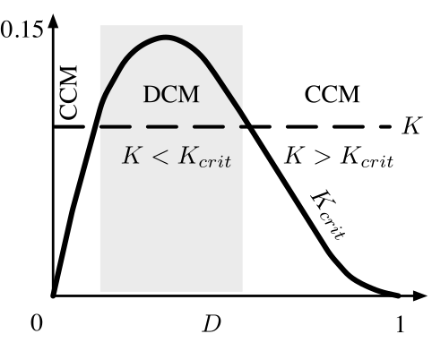
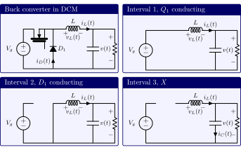
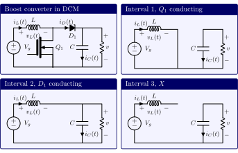
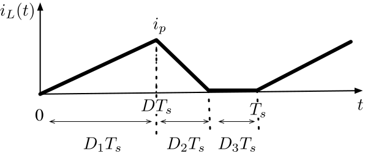

Discontinuous Conduction Mode (DCM)
Contents
Discontinuous Conduction Mode (DCM)#
The discontinuous conduction mode (DCM) occurs because switching ripple in inductor current or capacitor voltage causes polarity of applied switch current or voltage to reverse, such that the current- or voltage-unidirectional assumptions made in realising the switch are violated. It commonly occurs in dc-dc converters and rectifiers, having single- quadrant switches. May also occur in converters having two-quadrant switches. Typical examples of cases where DCM occurs are dc-dc converter operating at light load (small load current). Sometimes, dc-dc converters and rectifiers are purposely designed to operate in DCM at all loads.
Properties of converters change radically in DCM:
The conversion ratio \(M\) becomes load-dependent
Output impedance is increased
Dynamics are altered
Control of output voltage may be lost when load is removed
Origins of the discontinuous conduction mode and mode boundary#
We start this section by considering a buck converter with single-quadrant switches.
{kind=link}
Fig. 71 Schematic of a buck converter with single-quadrant switches.#
Minimum diode current: \(I-\Delta i_L\) DC component \(I=V/R\) Current ripple:
The inductor and diode currents for the case where the converter operates normally in the continuous conduction mode (CCM) are depicted in Fig. 72. Note that \(I\) depends on the load, but \(\Delta i_L\) does not.
{kind=link}
Fig. 72 Inductor and diode currents in a buck converter operating in continuous conduction mode (CCM).#
Now consider the case where \(R\) is increased until \(I=\Delta i_L\). The inductor and diode currents for this case are presented in Fig. 73.
{kind=link}
Fig. 73 Inductor and diode currents in a buck converter operating at the boundary between the continuous conduction mode (CCM) and the discontinuous conduction mode (DCM) where \(I=\Delta i_L\).#
In the next case, let’s increase \(R\), until \(I<\Delta i_L\). We note that the load current will remain positive and nonzero.
{kind=link}
Fig. 74 Inductor and diode currents in a buck converter operating in discontinuous conduction mode (CCM).#
Now we are ready to define Mode Boundary and critical load resistance \(R_{crit}\).
In CCM: \(I>\Delta i_L\)
DCM: \(I<\Delta i_L\) Using the expressions for \(I\) and \(\Delta i_L\) from the steady state analysis of buck converters, the DCM condition can be stated as
Define \(K=\dfrac{2L}{R T_s}\) and \(K_{crit}(D)=D'\). We can write the DCM condition as
Alternatively defining Critical load resistance \(R_{crit}=\dfrac{2L}{D' T_S}\), one can express the CCM and DCM conditions as the following:
The relationship among \(K\), \(K_{crit}\), and \(D\) for the two cases of \(K<1\) and \(K>1\) in a buck converter is depicted in Fig. 75.
{kind=link}
Fig. 75 CCM and DCM for different values of \(K\), \(K_{crit}\), and \(D\) for a buck converter.#
Next, we shift our focus to the analysis of a boost converter (Fig. 76) operating in DCM.
{kind=link}
Fig. 76 Schematic of a boost converter with single-quadrant switches.#
As in the case of a buck converter:
In CCM: \(I>\Delta i_L\)
DCM: \(I<\Delta i_L\)
Using the expressions for \(I=\dfrac{V_g}{D'^2 R}\) and \(\Delta i_L=\dfrac{V_g}{2L}DT_s\) from the steady-state analysis of boost converters, the converter operates in CCM when
Similar to the buck converter case the mode boundary can be stated as
where \(K=\dfrac{2L}{R T_s}\) and \(K_{crit}(D)=D D'^2\) as shown below.
{kind=link}
CCM-DCM mode boundaries for the buck, boost, and buck-boost converters are summarised in the following tables
Converter |
\(K_{crit}(D)\) |
\(\underset{0\leq D\leq 1}{\max} K_{crit}(D)\) |
\(R_{crit}(D)\) |
\(\underset{0\leq D \leq 1}{\min} R_{crit}(D)\) |
|---|---|---|---|---|
Buck |
\(1-D\) |
1 |
\(\dfrac{2L}{(1-D)T_s}\) |
\(2\dfrac{L}{T_s}\) |
Boost |
\(D(1-D)^2\) |
\(\dfrac{4}{27}\) |
\(\dfrac{2L}{D(1-D)^2T_s}\) |
\(\dfrac{27}{2}\dfrac{L}{T_s}\) |
Buck-boost |
\((1-D)^2\) |
1 |
\(\dfrac{2L}{(1-D)^2T_s}\) |
\(2\dfrac{L}{T_s}\) |
Derivation of the conversion ratio \(M(D,K)\) of a converter in DCM#
In steady-state inductor volt-second balance and capacitor charge-second balance relationships are satisfied. In other words:
Small ripple approximation, on the other hand, sometimes applies. Specifically, \(v(t)\approx V\) is a good approximation because \(\Delta v \ll V\) while \(i(t)\approx I\) is not a good approximation for the cases that \(\Delta i > I\) which is the root cause of DCM.
As in CCM, converter steady-state equations obtained via charge balance on each capacitor and volt-second balance on each inductor. One has to be careful in applying small ripple approximation.
Example (Analysis of buck converter in DCM)
Here we consider the case where a buck converter is operating in DCM and how its conversion ratio, \(M(D,K)\), can be derived. As the buck converter is operating in DCM, there will be an interval in which neither the diode nor the transistor is on. The buck converter and the three switching intervals are illustrated below.
{kind=link}
In Interval 1 where the diode is off and the transistor is on, applying KVL and KCL yield
Applying the small ripple approximation for \(v(t)\) (not for \(i_L(t)\)) results in
Similar to above, in Interval 2 where the diode is on and the transistor is off, applying KVL and KCL lead to
Applying small ripple approximation for \(v(t)\) (not for \(i_L(t)\)) one obtains
Finally, in interval 3 where both the diode and the transistor are off, we have
From Small ripple approximation:
The inductor voltage across these three intervals is depicted below.
{kind=link}
The inductor volt-second balance gives
Consequently,
where \(D_2\) is unknown.
Now let’s focus on the behaviour of the inductor current. The inductor is connected to the load and the output capacitor in an RLC configuration as below
{kind=link}
From the KCL we have
The inductor current graph is given below.
{kind=link}
Capacitor charge balance leads to \(\langle i_C\rangle =0\). Hence,
In this buck converter example, the DC component of inductor current must be computed and equated to load current. To this end, let’s compute the inductor peak current:
The average current is then computed as
Equating the DC component to DC load current:
Finding \(V\) involves solving two equations with unknowns).
Inductor volt-balance: \(V = V_g \dfrac{D_1}{D_1+D_2}\)
Capacitor charge-balance: \(\dfrac{V}{R}=(V_g-V)\dfrac{D_1 T_s}{2 L} (D_1 + D_2 )\)
Solving for \(V\):
where \(K=\dfrac{2L}{R T_s}\) and \(K<K_{crit}(D)\). Thus,
Example (Analysis of boost converter in DCM)
Here we consider the case where a bosot converter is operating in DCM and how its conversion ratio, \(M(D,K)\), can be derived. As the buck converter is operating in DCM, there will be an interval in which neither the diode nor the transistor is on. The buck converter and the three switching intervals are illustrated below.
{kind=link}
In Interval 1 where the diode is off and the transistor is on, applying KVL and KCL yield
Applying the small ripple approximation for \(v(t)\) (not for \(i_L(t)\)) results in
Similar to above, in Interval 2 where the diode is on and the transistor is off, applying KVL and KCL lead to
Applying small ripple approximation for \(v(t)\) (not for \(i_L(t)\)) one obtains
In interval 3 where both the diode and the transistor are off, we have
From Small ripple approximation:
The inductor voltage across these three intervals is depicted below.
{kind=link}
The inductor volt-second balance gives
Consequently,
where \(D_2\) is unknown.
Now let’s focus on the behaviour of the diode current. The diode is connected to the load and the output capacitor in a configuration as below
{kind=link}
From the KCL we have
The inductor current graph is given below.
{kind=link}
In the second interval the diode current is the same as the inductor current. Thus, the diode current wave form would look like the graph presented next.
The inductor current graph is given below.
{kind=link}
Capacitor charge balance leads to \(\langle i_C\rangle =0\). Hence,
In this boost converter example, the DC component of diode current must be computed and equated to load current. To this end, let’s compute the didoe peak current (which is the same as the inductor peak current):
The average current is then computed as
Equating the DC component to DC load current:
Finding \(V\) involves solving two equations with unknowns).
Inductor volt-balance: \(V = V_g \dfrac{D_1+D_2}{D_2}\)
Capacitor charge-balance: \(\dfrac{V}{R}=\dfrac{V_g D_1 D_2 T_s}{2 L}\)
Solving for \(V\): \(V^2-VV_g-\dfrac{V_g^2 D_1^2}{K}\), \(K=\dfrac{2L}{RT_s}\). Thus,
Rejecting the negative root:
where \(K<K_{crit}(D)\). (Note that the transistor duty cycle, \(D\), is equal to \(D_1\).)
Thus,
Approximation:
In the following table CCM-DCM charactersitics of three famous converters are summarised. Remember that \(K=\dfrac{2L}{R T_s}\) and DCM occurs for \(K<K_{crit}\)}.
Converter |
\(K_{crit}(D)\) |
\(DCM\; M(D,K)\) |
\(DCM\; D_2(D,K)\) |
\(CCM\; M(D)\) |
|---|---|---|---|---|
Buck |
\(1-D\) |
\(\dfrac{2}{1+\sqrt{1+4K/D^2}}\) |
\(\dfrac{K}{D}M(D,K)\) |
\(D\) |
Boost |
\(D(1-D)^2\) |
\(\dfrac{1+\sqrt{1+4D^2/K}}{2} \) |
\(\dfrac{K}{D}M(D,K)\) |
\(\dfrac{D}{1-D}\) |
Buck-boost |
\((1-D)^2\) |
\(-\dfrac{D}{\sqrt{K}}\) |
\(\sqrt{K}\) |
\(-\dfrac{D}{1-D}\) |
Summary#
The DCM conversion ratio (DCM charactersitics) of buck, boost, and buck-boost converter are presented below.
{kind=link}
Fig. 77 Summary of DCM characteristics of three converters.#
DCM buck and boost characteristics are asymptotic to \(M = 1\) and to the DCM buck-boost characteristic. DCM buck-boost characteristic is linear. CCM and DCM characteristics intersect at mode boundary. Actual \(M\) follows characteristic having larger magnitude. DCM boost characteristic is nearly linear.
The discontinuous conduction mode occurs in converters containing current- or voltage-unidirectional switches, when the inductor current or capacitor voltage ripple is large enough to cause the switch current or voltage to reverse polarity.
Conditions for operation in the discontinuous conduction mode can be found by determining when the inductor current or capacitor voltage ripples and DC components cause the switch on-state current or off-state voltage to reverse polarity.
The DC conversion ratio \(M\) of converters operating in the discontinuous conduction mode can be found by application of the principles of inductor volt-second and capacitor charge balance.
Extra care is required when applying the small-ripple approximation. Some waveforms, such as the output voltage, should have small ripple which can be neglected. Other waveforms, such as one or more inductor currents, may have large ripple that cannot be ignored.
The characteristics of a converter changes significantly when the converter enters DCM. The output voltage becomes load- dependent, resulting in an increase in the converter output impedance.